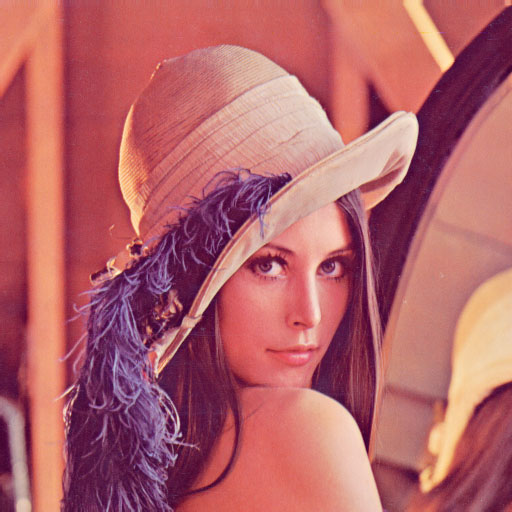
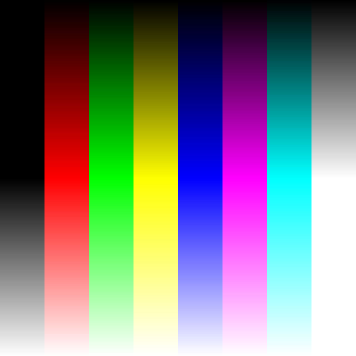

 
canvas = document.getElementById("canvas");
context = canvas.getContext("2d");
lenna = new Image();
lenna.src = "res/tex7.jpg";
large = new Image();
large.src = "res/tex0.jpg";
var bmd = new BitmapData(512, 512, false, 0xff0000);
bmd.initProgram(Difference);
bmd.initTexture(0, lenna);
bmd.initTexture(1, large);
clipping = new Rectangle(0, 0, 512, 512);
point = new Point(0, 0);
rotoMatrix = new Matrix(1, 0, 0, 1, 150.0, 150.0);
zoomMax = 30.0;
zoomMin = -20.0;
dz = 0.025;
dr= 0.02;
angle = 0;
zoom = zoomMin;
isZoomIncreasing = true;
setInterval(function() {
if ( isZoomIncreasing ) zoom = zoom + dz;
else zoom = zoom - dz;
angle = angle + dr;
if ( angle > 360 ) angle = 0;
if ( zoom > zoomMax ) {
isZoomIncreasing = false;
zoom = zoomMax;
} else if ( zoom < zoomMin ) {
isZoomIncreasing = true;
zoom = zoomMin;
}
rotoMatrix.a = Math.cos(angle) * zoom;
rotoMatrix.b = Math.sin(angle);
rotoMatrix.c = -Math.sin(angle);
rotoMatrix.d = Math.cos(angle) * zoom;
bmd.drawGL(rotoMatrix);
context.putImageData(bmd.data, 0, 0);
}, 10);